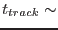
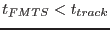

In Fast mode, because of telemetry constraints, the shift-and-add performed on the spacecraft in IMAGE mode is applied to FAST mode data on the ground. This is achieved using two SAS tasks. This task applies the `shift' and EVSELECT applies the `add'.
In IMAGE mode the DPU shift-and-add procedure is applied after every tracking frame integration,  10-20 seconds. In FAST mode, a FAST mode time slice (FMTS) is defined with duration . Each event is tagged with a frame number corresponding to the FMTS in which the event was detected. It is therefore possible to correct each event with a fine shift calculated from a linear interpolation of the tracking frame shifts
OMFASTSHIFT calculates drift-corrected event positions based on a linear interpolation over a tracking frame integration, of drifts stored in the ODF OM tracking history auxiliary data file. These are then written as additional columns to the input ODF OM fast mode event list file.
The drift-corrected OM Fast mode event list file is passed to OMFASTFLAT which uses the OM in-orbit flatfield and the RAWX/RAWY values of the event list to flatfield the event list on an event by event basis. The output flatfielded event list is then passed to EVSELECT to produce a Fast Mode flatfielded image which can be treated by subsequent SAS tasks in the same way as an Image Mode flatfielded image.